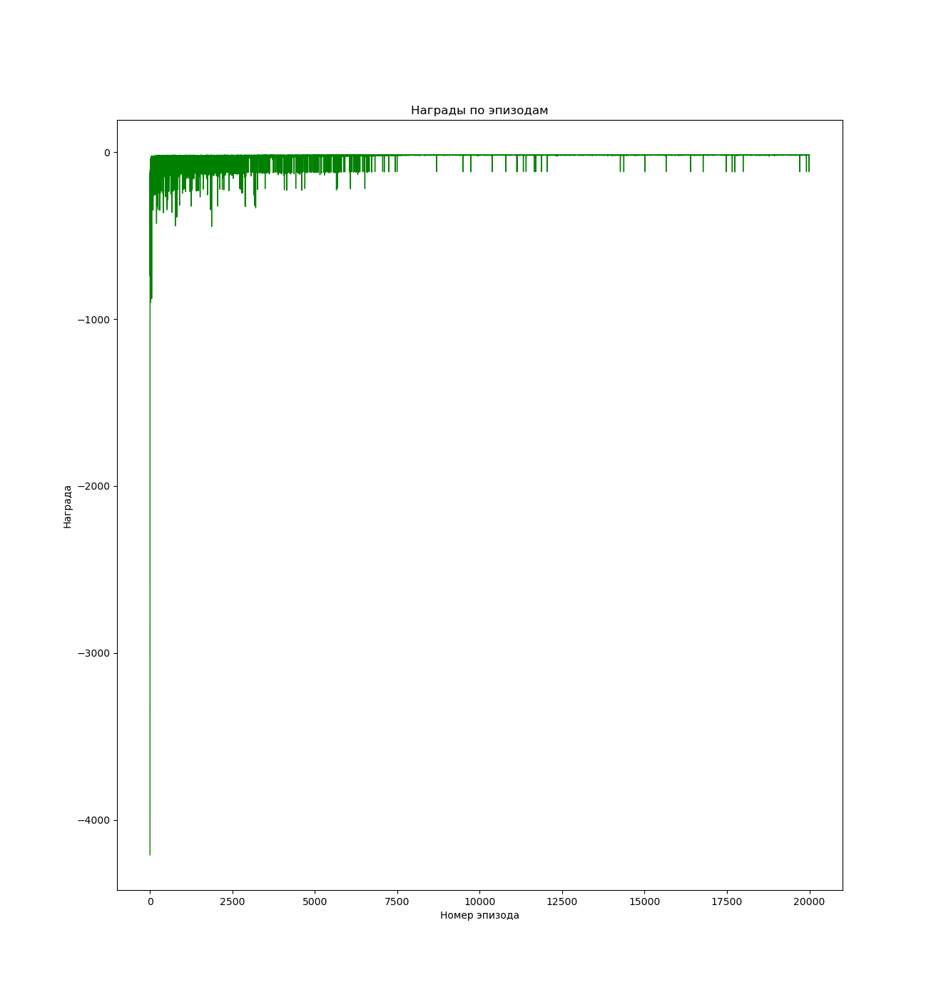
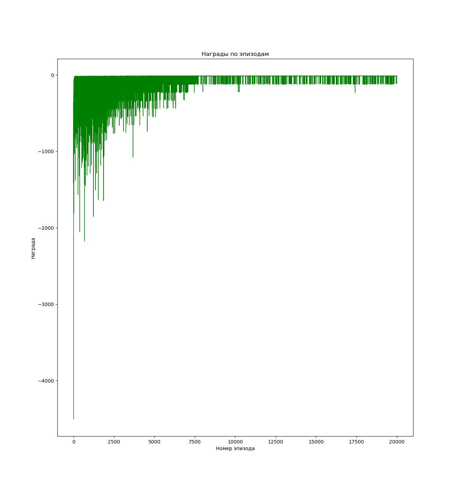
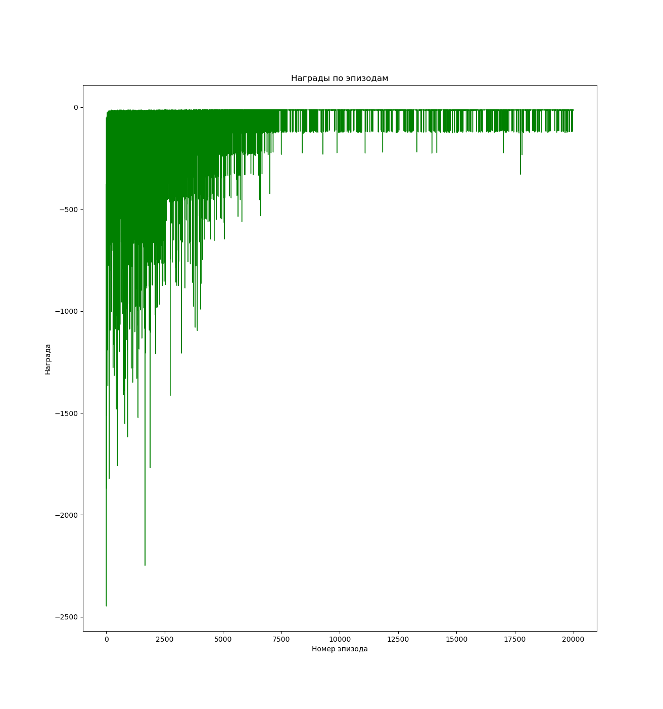

МОСКОВСКИЙ ГОСУДАРСТВЕННЫЙ ТЕХНИЧЕСКИЙ УНИВЕРСИТЕТ
им. Н.Э. Баумана
Факультет «Информатика и системы управления»
Кафедра «Систем обработки информации и управления»
Лабораторная работа №__2__
по дисциплине «Методы машинного обучения»
Тема:
«Обучение с подкреплением. Обучение на основе временных различий»
Вариант № 13
ИСПОЛНИТЕЛЬ: ____Пакало А. С.__
ФИО
группа ИУ5-22М ____________________
подпись
"__"_________2024 г.
ПРЕПОДАВАТЕЛЬ: ____Гапанюк Ю. Е._
ФИО
__________________
подпись
"__"_________2024 г.
Москва - 2024
__________________________________________________________
Задание
На основе рассмотренного на лекции примера реализуйте следующие алгоритмы:
- SARSA
- Q-обучение
- Двойное Q-обучение
для любой среды обучения с подкреплением (кроме рассмотренной на лекции среды Toy Text / Frozen Lake) из библиотеки Gym (или аналогичной библиотеки).
Выполнение
Исходный код программы:
import sys
import gym
from toy_environment.consts import CLIFF_WALKING_ENV
from time_difference_algorithms.basic_agent import BasicAgent
from time_difference_algorithms.sarsa_agent import SarsaAgent
from time_difference_algorithms.q_learning_agent import QLearningAgent
from time_difference_algorithms.double_q_learning_agent import DoubleQLearningAgent
ENV = CLIFF_WALKING_ENV
def play_agent(agent):
"""
Проигрывание сессии для обученного агента
"""
env = gym.make(ENV["name"], render_mode="human")
state = env.reset()[0]
done = False
while not done:
action = agent.greedy(state)
next_state, reward, terminated, truncated, _ = env.step(action)
env.render()
state = next_state
if terminated or truncated:
done = True
def run_algorithm(agent: BasicAgent):
agent.learn()
agent.print_q()
agent.draw_episodes_reward()
play_agent(agent)
def run_sarsa():
env = gym.make(ENV["name"])
agent = SarsaAgent(env)
run_algorithm(agent)
def run_q_learning():
env = gym.make(ENV["name"])
agent = QLearningAgent(env)
run_algorithm(agent)
def run_double_q_learning():
env = gym.make(ENV["name"])
agent = DoubleQLearningAgent(env)
run_algorithm(agent)
def main(algorithm: str):
match algorithm:
case "sarsa":
run_sarsa()
case "q_learning":
run_q_learning()
case "double_q_learning":
run_double_q_learning()
case _:
print("Choose algorithm from one of the existing")
if __name__ == "__main__":
print(sys.argv)
if len(sys.argv) < 2:
raise Exception('Please choose algorithm by passing argument')
main(algorithm=sys.argv[1])В главном модуле используются агенты, отдельно реализованные для каждого алгоритма.
Basic Agent
Используется для создания других агентов.
import numpy as np
import matplotlib.pyplot as plt
class BasicAgent:
"""
Базовый агент, от которого наследуются стратегии обучения
"""
# Наименование алгоритма
ALGO_NAME = "---"
def __init__(self, env, eps=0.1):
# Среда
self.env = env
# Размерности Q-матрицы
self.nA = env.action_space.n
self.nS = env.observation_space.n
# и сама матрица
self.Q = np.zeros((self.nS, self.nA))
# Значения коэффициентов
# Порог выбора случайного действия
self.eps = eps
# Награды по эпизодам
self.episodes_reward = []
def print_q(self):
print("Вывод Q-матрицы для алгоритма ", self.ALGO_NAME)
print(self.Q)
def get_state(self, state):
"""
Возвращает правильное начальное состояние
"""
if type(state) is tuple:
# Если состояние вернулось с виде кортежа, то вернуть только номер состояния
return state[0]
else:
return state
def greedy(self, state):
"""
<<Жадное>> текущее действие
Возвращает действие, соответствующее максимальному Q-значению
для состояния state
"""
return np.argmax(self.Q[state])
def make_action(self, state):
"""
Выбор действия агентом
"""
if np.random.uniform(0, 1) < self.eps:
# Если вероятность меньше eps
# то выбирается случайное действие
return self.env.action_space.sample()
else:
# иначе действие, соответствующее максимальному Q-значению
return self.greedy(state)
def draw_episodes_reward(self):
# Построение графика наград по эпизодам
fig, ax = plt.subplots(figsize=(15, 10))
y = self.episodes_reward
x = list(range(1, len(y) + 1))
plt.plot(x, y, "-", linewidth=1, color="green")
plt.title("Награды по эпизодам")
plt.xlabel("Номер эпизода")
plt.ylabel("Награда")
plt.show()
def learn(self):
"""
Реализация алгоритма обучения
"""
passSarsa Agent
from tqdm import tqdm
from time_difference_algorithms.basic_agent import BasicAgent
class SarsaAgent(BasicAgent):
"""
Реализация алгоритма SARSA
"""
# Наименование алгоритма
ALGO_NAME = "SARSA"
def __init__(self, env, eps=0.4, lr=0.1, gamma=0.98, num_episodes=20000):
# Вызов конструктора верхнего уровня
super().__init__(env, eps)
# Learning rate
self.lr = lr
# Коэффициент дисконтирования
self.gamma = gamma
# Количество эпизодов
self.num_episodes = num_episodes
# Постепенное уменьшение eps
self.eps_decay = 0.00005
self.eps_threshold = 0.01
def learn(self):
"""
Обучение на основе алгоритма SARSA
"""
self.episodes_reward = []
# Цикл по эпизодам
for ep in tqdm(list(range(self.num_episodes))):
# Начальное состояние среды
state = self.get_state(self.env.reset())
# Флаг штатного завершения эпизода
done = False
# Флаг нештатного завершения эпизода
truncated = False
# Суммарная награда по эпизоду
tot_rew = 0
# По мере заполнения Q-матрицы уменьшаем вероятность случайного выбора действия
if self.eps > self.eps_threshold:
self.eps -= self.eps_decay
# Выбор действия
action = self.make_action(state)
# Проигрывание одного эпизода до финального состояния
while not (done or truncated):
# Выполняем шаг в среде
next_state, rew, done, truncated, _ = self.env.step(action)
# Выполняем следующее действие
next_action = self.make_action(next_state)
# Правило обновления Q для SARSA
self.Q[state][action] = self.Q[state][action] + self.lr * (
rew
+ self.gamma * self.Q[next_state][next_action]
- self.Q[state][action]
)
# Следующее состояние считаем текущим
state = next_state
action = next_action
# Суммарная награда за эпизод
tot_rew += rew
if done or truncated:
self.episodes_reward.append(tot_rew)Q Learning Agent
from tqdm import tqdm
import numpy as np
from time_difference_algorithms.basic_agent import BasicAgent
class QLearningAgent(BasicAgent):
"""
Реализация алгоритма Q-Learning
"""
# Наименование алгоритма
ALGO_NAME = "Q-обучение"
def __init__(self, env, eps=0.4, lr=0.1, gamma=0.98, num_episodes=20000):
# Вызов конструктора верхнего уровня
super().__init__(env, eps)
# Learning rate
self.lr = lr
# Коэффициент дисконтирования
self.gamma = gamma
# Количество эпизодов
self.num_episodes = num_episodes
# Постепенное уменьшение eps
self.eps_decay = 0.00005
self.eps_threshold = 0.01
def learn(self):
"""
Обучение на основе алгоритма Q-Learning
"""
self.episodes_reward = []
# Цикл по эпизодам
for ep in tqdm(list(range(self.num_episodes))):
# Начальное состояние среды
state = self.get_state(self.env.reset())
# Флаг штатного завершения эпизода
done = False
# Флаг нештатного завершения эпизода
truncated = False
# Суммарная награда по эпизоду
tot_rew = 0
# По мере заполнения Q-матрицы уменьшаем вероятность случайного выбора действия
if self.eps > self.eps_threshold:
self.eps -= self.eps_decay
# Проигрывание одного эпизода до финального состояния
while not (done or truncated):
# Выбор действия
# В SARSA следующее действие выбиралось после шага в среде
action = self.make_action(state)
# Выполняем шаг в среде
next_state, rew, done, truncated, _ = self.env.step(action)
# Правило обновления Q для SARSA (для сравнения)
# self.Q[state][action] = self.Q[state][action] + self.lr * \
# (rew + self.gamma * self.Q[next_state][next_action] - self.Q[state][action])
# Правило обновления для Q-обучения
self.Q[state][action] = self.Q[state][action] + self.lr * (
rew
+ self.gamma * np.max(self.Q[next_state])
- self.Q[state][action]
)
# Следующее состояние считаем текущим
state = next_state
# Суммарная награда за эпизод
tot_rew += rew
if done or truncated:
self.episodes_reward.append(tot_rew)Double Q Learning
from tqdm import tqdm
import numpy as np
from time_difference_algorithms.basic_agent import BasicAgent
class DoubleQLearningAgent(BasicAgent):
"""
Реализация алгоритма Double Q-Learning
"""
# Наименование алгоритма
ALGO_NAME = "Двойное Q-обучение"
def __init__(self, env, eps=0.4, lr=0.1, gamma=0.98, num_episodes=20000):
# Вызов конструктора верхнего уровня
super().__init__(env, eps)
# Вторая матрица
self.Q2 = np.zeros((self.nS, self.nA))
# Learning rate
self.lr = lr
# Коэффициент дисконтирования
self.gamma = gamma
# Количество эпизодов
self.num_episodes = num_episodes
# Постепенное уменьшение eps
self.eps_decay = 0.00005
self.eps_threshold = 0.01
def greedy(self, state):
"""
<<Жадное>> текущее действие
Возвращает действие, соответствующее максимальному Q-значению
для состояния state
"""
temp_q = self.Q[state] + self.Q2[state]
return np.argmax(temp_q)
def print_q(self):
print("Вывод Q-матриц для алгоритма ", self.ALGO_NAME)
print("Q1")
print(self.Q)
print("Q2")
print(self.Q2)
def learn(self):
"""
Обучение на основе алгоритма Double Q-Learning
"""
self.episodes_reward = []
# Цикл по эпизодам
for ep in tqdm(list(range(self.num_episodes))):
# Начальное состояние среды
state = self.get_state(self.env.reset())
# Флаг штатного завершения эпизода
done = False
# Флаг нештатного завершения эпизода
truncated = False
# Суммарная награда по эпизоду
tot_rew = 0
# По мере заполнения Q-матрицы уменьшаем вероятность случайного выбора действия
if self.eps > self.eps_threshold:
self.eps -= self.eps_decay
# Проигрывание одного эпизода до финального состояния
while not (done or truncated):
# Выбор действия
# В SARSA следующее действие выбиралось после шага в среде
action = self.make_action(state)
# Выполняем шаг в среде
next_state, rew, done, truncated, _ = self.env.step(action)
if np.random.rand() < 0.5:
# Обновление первой таблицы
self.Q[state][action] = self.Q[state][action] + self.lr * (
rew
+ self.gamma
* self.Q2[next_state][np.argmax(self.Q[next_state])]
- self.Q[state][action]
)
else:
# Обновление второй таблицы
self.Q2[state][action] = self.Q2[state][action] + self.lr * (
rew
+ self.gamma
* self.Q[next_state][np.argmax(self.Q2[next_state])]
- self.Q2[state][action]
)
# Следующее состояние считаем текущим
state = next_state
# Суммарная награда за эпизод
tot_rew += rew
if done or truncated:
self.episodes_reward.append(tot_rew)Результат
Агент выбирается из аргументов консольной строки.
- Sarsa Agent 
- Q Learning Agent 
- Double Q Learning Agent 
Вывод
Все три алгоритма отлично справились с поставленной задачей. Однако QLearning и DoubleQLearning решили её эффективнее: агент обходит пропасть по самому краю обрыва, тратя меньше ходов, чем агент, обучающийся по алгоритму Sarsa.